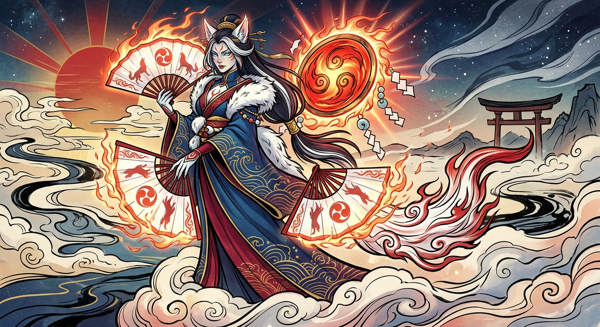

Kitana
Aventurière des mondes de survie, de construction et d'exploration.
📜 Introduction
Cette image relie l'esthétique mythologique aux mécaniques et à l'ambiance des jeux de survie, de construction et d'exploration comme No Man's Sky, Valheim, Conan Exiles, Palworld, Icarus et Once Human.
Dans le multivers infini du gaming, là où les serveurs sont des dimensions et le code est la trame de la réalité, existe une entité unique connue sous de multiples noms : Kitana, Kalhane, Tibalte ou Lucyan, selon les réalités à traverser.
Cette image n'est pas une simple peinture. C'est l'incarnation d'un Patch Note Divin : la convergence de l'esthétique et de la survie, de l'exploration cosmique et de la construction féodale.
👑 L'Entité de la Boucle Divine
Ce personnage est le « Boss Final de la Création ». Ni purement technologique, ni purement magique, elle est le pont entre l'ancien monde et le nouveau monde digital.
🐺 L'armure de la survie
Valheim et Conan Exiles se retrouvent dans sa tenue. L'oriental se mêle aux fourrures et aux motifs complexes, comme une parure forgée après avoir vaincu les plus grands dangers.
C'est l'armure de « Tier 4 » ultime : la fusion de la soie et de la peau de bête.
🦊 L'empreinte de la déesse-louve
Son maquillage rappelle la déesse-louve Shiranui Amaterasu. Elle est la « Déesse des Pals » originelle de Palworld.
Ce n'est pas un simple masque, mais la marque de son lien unique avec toutes les créatures. On raconte que le tout premier Pal Légendaire fut sculpté à partir de son propre reflet.
🐾 Le côté sauvage
Ses oreilles et ses griffes symbolisent une nature sauvage et indomptable. Même parée de ses plus beaux atours, l'Architecte n'oublie jamais que la nature reprend ses droits.
Une essence que l'on retrouve dans les mondes hostiles de Conan Exiles et l'environnement mortel d'Icarus.
🔥 La Trinité des Éventails du Code
Ces éventails ne servent pas à rafraîchir. Ce sont des terminaux de déploiement de réalité.
Chacun représente un aspect fondamental du gameplay et possède sa propre fonction.
◈ Le Plan — en haut à gauche
Gravé du symbole Tomoe, il représente le Menu de Construction. C'est lui qui permet d'imposer des structures au monde : bases, forteresses ou stations spatiales.
Valheim • Once Human
◈ La Flore Cosmique — en bas au centre
Fleurs de cerisier et feuillage étrange composent le biotope. Il représente la vie qui nourrit les joueurs et leurs créatures.
No Man's Sky • Palworld • Icarus
◈ La Faune Éternelle — en bas à droite
Décoré de loups rugissants, cet éventail symbolise le système d'apprivoisement et la faune hostile.
C'est la Déesse qui invoque les loups de Valheim, les Thralls de Conan Exiles et qui insuffle la vie aux Pals de Palworld.
◈ Les Flammes
Le feu qui entoure les éventails est le « Debug Fire » : l'énergie pure du code en action. Il brûle les erreurs de génération du terrain et force les structures à s'ancrer dans la réalité du serveur.

La Grande Mise à Jour du Panthéon de la Création
🌌 L'Arrière-Plan : Le Multivers des Serveurs
Le paysage forme une véritable « Carte-Mère » géographique, où chaque élément appartient à un univers différent.
☀️ Le Grand Soleil Rouge
Il représente le Cœur de la Galaxie de No Man's Sky et le Soleil Rouge d'Icarus. Sa lumière ne se contente pas de réchauffer : elle analyse et érode tout ce qui n'est pas adapté à l'environnement.
🌊 Les Nuages de Code
Les volutes noires et bleues au sol sont le « Terrain Invisible » en cours de chargement. L'Architecte marche sur ces vagues de code naissantes et stabilise le sol afin que les joueurs puissent s'y installer.
📜 La Pluie de Charms et de Signes
Les objets qui flottent dans le ciel sont des ressources rares et des recettes de craft. Ils prennent la forme de « Schemas » d'Icarus, de « Blueprints » de Once Human ou de gravures de langage alien de No Man's Sky.
Ils apparaissent dans le ciel après un événement majeur.
⛩️ Le Torii et les Montagnes
Le Torii marque l'entrée d'un biome mystique ou d'une « Dungeon Gate », comme celles que l'on pourrait rencontrer dans Once Human ou Valheim.
Il sépare le terrain connu des zones de haut niveau, là où attendent dangers et butins légendaires.
🔥 Le Miroir de Feu
C'est le « Core » du serveur : le soleil local qui gère l'IA. Les « Shimenawa », ces cordes sacrées qui l'entourent, contiennent son énergie afin d'empêcher un effondrement en glitch massif.
🔮 Conclusion du Lore
Cette Gardienne apparaît dans les rêves des joueurs de survie juste avant une « Grande Mise à Jour » : un Wipe ou un Patch Majeur.
Elle est la promesse de nouveaux mondes à construire, de nouvelles créatures à apprivoiser et de nouvelles ressources à miner.
Son sourire est doux, mais son pouvoir est absolu. Elle est le pont entre la beauté de l'artisanat et la brutalité d'un monde qui veut votre mort.
Les prochains grands défis
🏜️ Dune
•
🔥 Light No Fire